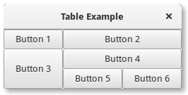

Tabela¶
Nota
Gtk.Table foi descontinuado desde o GTK+ versão 3.4 e não deve ser usado em código recém-escrito. Use a classe Grid.
Tabelas nos permite colocar widgets em uma grade similar a Gtk.Grid.
As dimensões da grade precisam ser especificadas no construtor Gtk.Table. Para colocar um widget em uma caixa, use Gtk.Table.attach().
Gtk.Table.set_row_spacing() e Gtk.Table.set_col_spacing() definem o espaçamento entre as linhas na linha ou coluna especificada. Observe que, para colunas, o espaço vai para a direita da coluna e, para linhas, o espaço fica abaixo da linha.
Você também pode definir um espaçamento consistente para todas as linhas e/ou colunas com Gtk.Table.set_row_spacings() e Gtk.Table.set_col_spacings(). Observe que, com essas chamadas, a última linha e a última coluna não recebem espaçamento.
Obsoleto desde a versão 3.4: É recomendado que você use o Gtk.Grid para o novo código.
Exemplo¶
1 2 3 4 5 6 7 8 9 10 11 12 13 14 15 16 17 18 19 20 21 22 23 24 25 26 27 28 29 30 | import gi
gi.require_version('Gtk', '3.0')
from gi.repository import Gtk
class TableWindow(Gtk.Window):
def __init__(self):
Gtk.Window.__init__(self, title="Table Example")
table = Gtk.Table(3, 3, True)
self.add(table)
button1 = Gtk.Button(label="Button 1")
button2 = Gtk.Button(label="Button 2")
button3 = Gtk.Button(label="Button 3")
button4 = Gtk.Button(label="Button 4")
button5 = Gtk.Button(label="Button 5")
button6 = Gtk.Button(label="Button 6")
table.attach(button1, 0, 1, 0, 1)
table.attach(button2, 1, 3, 0, 1)
table.attach(button3, 0, 1, 1, 3)
table.attach(button4, 1, 3, 1, 2)
table.attach(button5, 1, 2, 2, 3)
table.attach(button6, 2, 3, 2, 3)
win = TableWindow()
win.connect("destroy", Gtk.main_quit)
win.show_all()
Gtk.main()
|